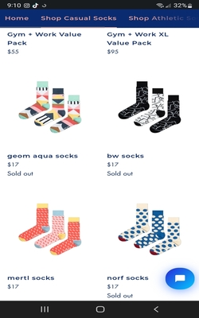

White space and Clean Design and Constrast
Odd pears
https://www.oddpears.com/

For this website I chose the principles of white space, and contrast. The reason for that Odd Pears
is able to recognize the bold designs and colors of their product and use white space as contrast to not overcrawd
their design with other colors, backgrounds and fonts. For this page white space is a great tool to balance
and better organize content to improve the visual communication experience. Also white space/background
is use as contrast to make their product stand out.
Visual Hierachy
Academy Sports + Outdoor
https://www.academy.com/
Academy Sports Store has done a good job with visual Hierachy; as the arrangmet of elements
to show their order of importance. If one pays notice on the picture,
they have more than one sale going on, the first one is more eye cahtching; wchis is a the top of the screen
with color background and bold dramatic font. Then, the second sale which,
is where the hierachy come into play,not only is placed lower on the screen. The font while still in color
is less dramatic, more even in sized with a white background.
Fitts Law
OshKosh B'gosh
https://www.oshkosh.com/
What I like about Fitts Law is the application to the user experience and the "ease of use" to get to
a targeted area or information of the webpage. In the case of OKB, Fitts Law is exemplifided
in the use of buttons with each of the categories of the clothes sizes they have. I liked the part on where
Fitts Law states that the longer the distance the harded is to make a desition. in this case you dont have to spend
extra time searching among all their inventory to find a size.The faster you get there, the higer the chances of making a purchase.